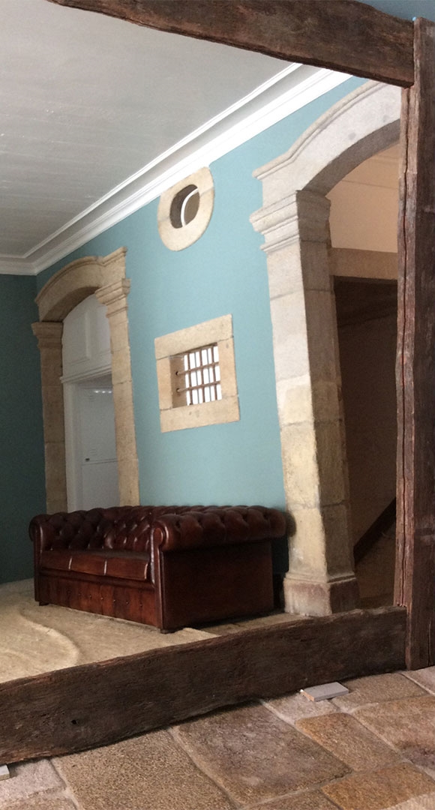
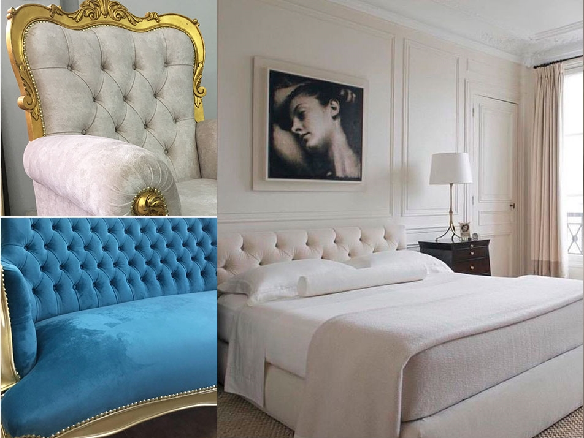

JC INTERIORES / ESTOFOS & DECORAÇÃO
O detalhe
muda o
ambiente.
Texturas, volumes e o lugar que cada peça ocupa. Um olhar sobre os estofos e a decoração de interiores, na Maia.
Explorar ambientesDA PEÇA AO ESPAÇO
UM OLHAR MAIS PRÓXIMO
O conforto também
se vê nos pormenores.
Um cadeirão, um sofá ou uma cabeceira mudam a forma como se lê um espaço. Nas imagens da JC Interiores, o desenho e a textura surgem lado a lado.
Ver a galeria
VOLUMES / TEXTURAS / INTERIORES
Várias peças.
Uma atenção ao detalhe.
O GESTO E A MATÉRIA
Aproximar o olhar.
A mão que trabalha o tecido, o relevo de um estofo, a queda de um cortinado. Pormenores que merecem espaço para serem vistos.
Descobrir os pormenores
JC INTERIORES · MAIA